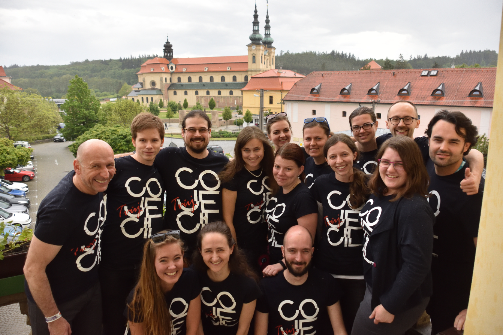
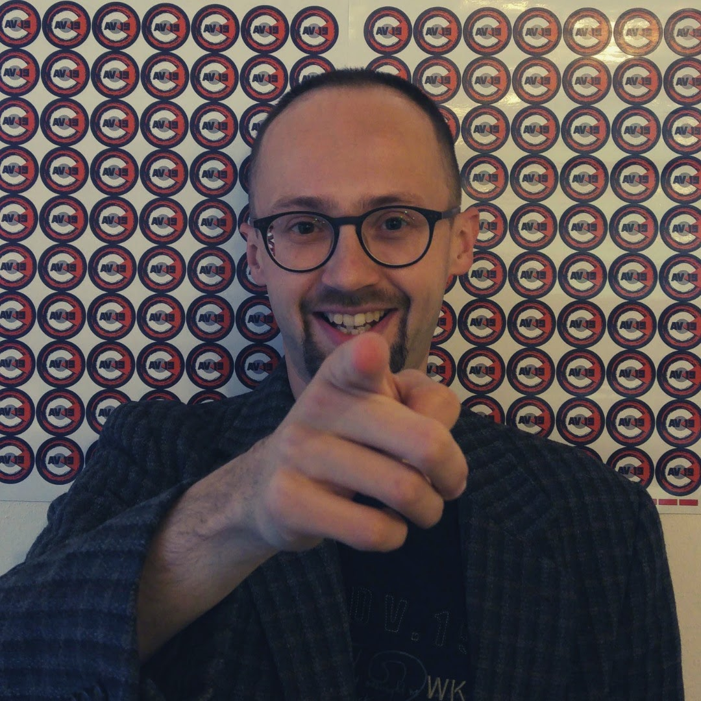
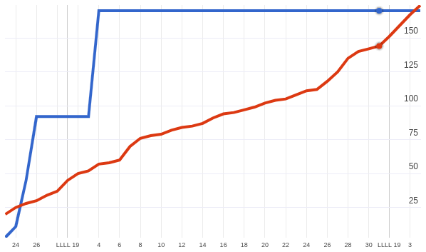

Ahoj,
po nějakém čase jsme tady zas! A chceme představit jeden příběh, který jsme všichni spolu utvářeli... to příběh Absolventského Velehradu 2019! Určitě si teď vybavíš ty nejintenzivnější vzpomínky z AV19 - nádherné zpěvy Taizé, pot během Krav Maga tréninku, skvělou atmosféru vinárny ve sklepě Gymnázia nebo úplně jiný moment, který tě oslovil.
Ale než budeme vzpomínat na samotnou akci, rádi bychom představili, co tomu vlastně předcházelo.
Co bylo potřeba udělat, aby proběhlo AV 19?
První setkání proběhlo 26.2.2018 (1 rok a 3 měsíce před akcí) a účastnily se 2 osoby (z celkem 4 lidí, kteří byli tou dobou v týmu). Postupně počet rostl až na 14 dobrovolníků přímo v organizačním týmu a několik lidí, kteří mu byli velmi blízko. Protože jsme byli rozprostřeni po celé republice, potkávali jsme se každý měsíc na střídačku v Praze, Brně, Ostravě nebo Plzni.
Během toho jsme najezdili tisíce kilometrů, byli stovky hodin na cestách, na Slacku (kecálek) vyměnili 4400 zpráv a odeslali si více než 600 emailů. Z toho jde vidět, že jsme dost komunikovali.
A doufali jsme, že se všechno povede. A povedlo.
A komunikovali jsme s vámi! Na Facebooku jsme uveřejnili za celou dobu 67 příspěvků, během AV19 jsem udělali 5 streamů z přednášek a na YouTube jsme uveřejnili 13 videí.
A zájem o AV19 byl! A jaký! První vlaštovkou bylo zvětšení počtu fanoušků - z 184 na 343.
A víte jaký byl nejlepší příspěvek, který jsme uveřejnili?
Založili jsme Instagram, který ovšem nikdy nedosáhl sledovanosti FB. Nevadí! :) Vytvořili jsme tento web, upravili web AV19 (který jsme pak úspěšně omylem smazali) a naprogramovali mobilní aplikaci pro Android, kterou měla krásných 131 instalací. A která během AV 6x spadla z neznámých důvodů :)
Co nás fakt překvapilo?
Registrace. Pamatujete si, jak jsme museli registraci zastavit během dne, dvou? A jak jsme kapacitu naplnili během 3 dnů? Tady můžete vidět průběh registrace v roce 2017 (červená) a v roce 2019 (modrá). Takový zájem jsme vůbec netušili a náš systém na to bohužel nebyl stavěný. Na naši obranu, předpokládali jsme podobný vývoj jako u AV 17.
Věděli jsme, že očekávání budou velká. Věděli jsme, že se na AV všichni těší. A doufali jsme, že se všechno povede. A povedlo. Ke chvále Boží!
Práce to nebylo málo, ale stálo to za to! Tímto také zpětně děkujeme všem, kteří se za nás modlili!
V příští části Vám ukážeme co všechno na AV19 bylo, co jsme prožili a zažili.
Máš svou vzpomínku, kterou bys rád/a prezentovala? Napiš nám! Určitě se domluvíme!